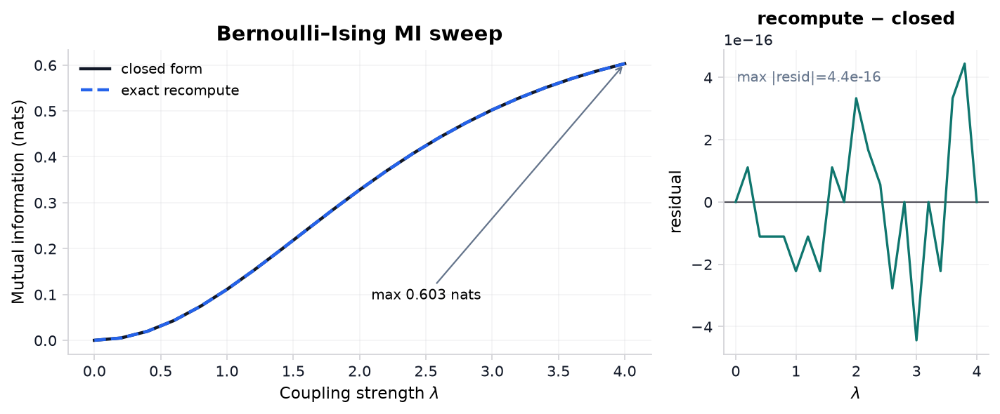
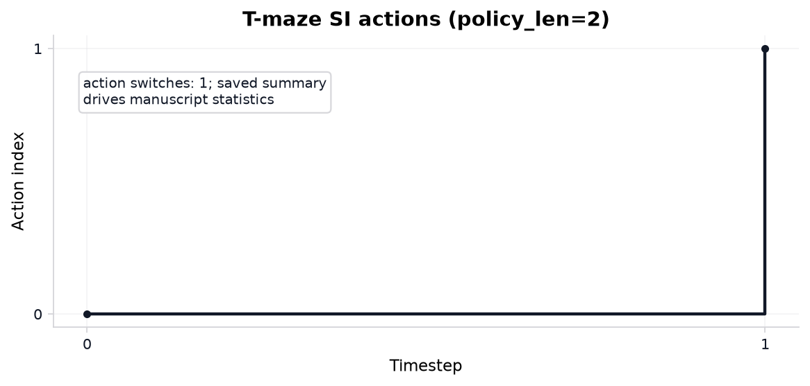
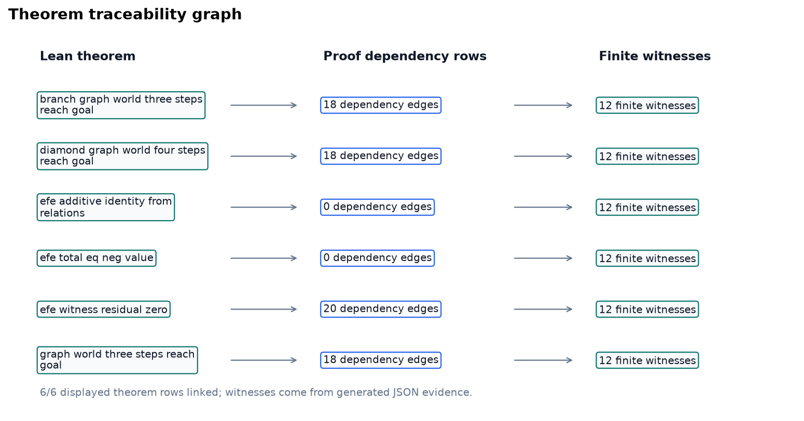
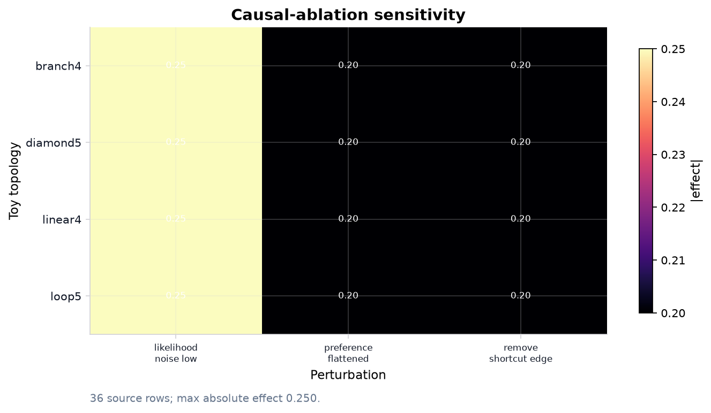
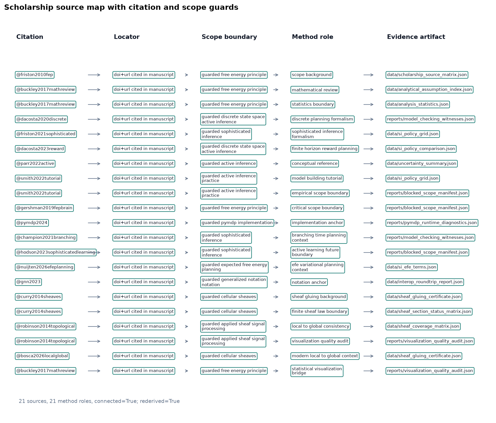
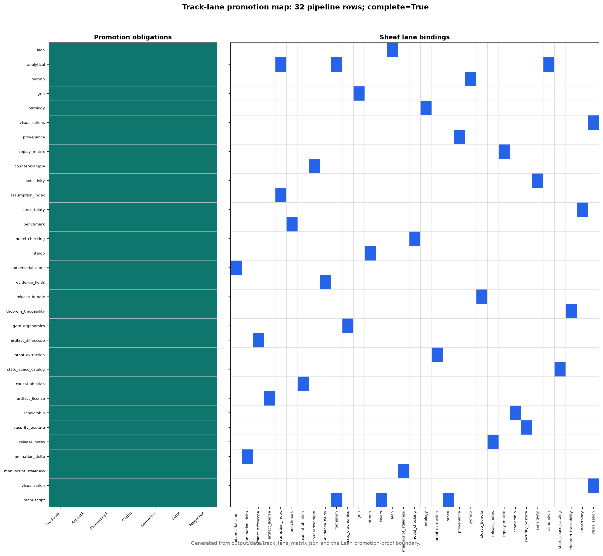
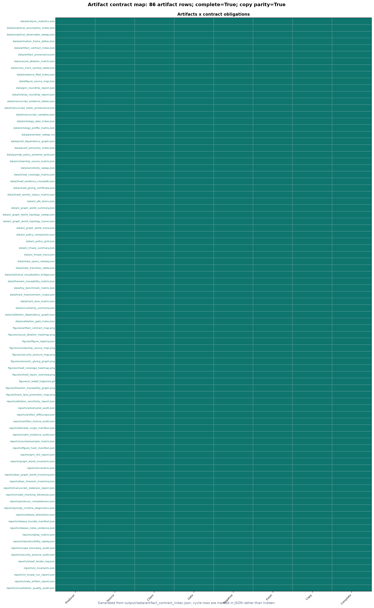
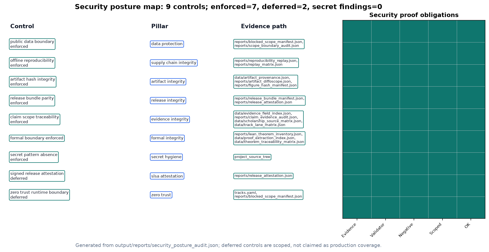
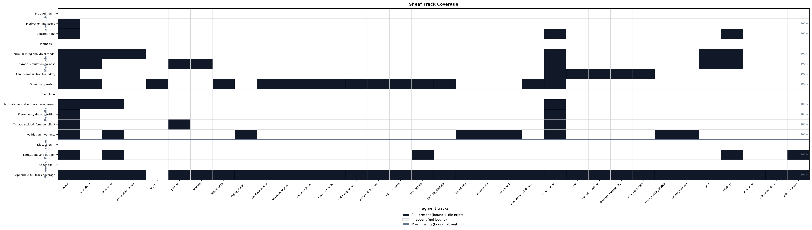

14 Appendix: full track coverage
This section is the composability proof for the
manifest-indexed sheaf model: all 33 appendix-bound fragment tracks
render into one flat manuscript section without section-specific compose
branches. The registry defines 34 composable types; optional
layers is methods-only and excluded from this row. The
animation fragment is bound here as an optional registry
type alongside the live proof, simulation, formal, notation,
validation-spine, integration, audit, finite-catalog, ablation, license,
release-evidence, scholarship, assumption-index, delta, and staleness
tracks.
The proof is a publication-systems check (eq. 4). It demonstrates that heterogeneous fragments share one registry, manifest, renderer dispatch path, coverage matrix, and hydration boundary; it does not assert that every track carries equal scientific weight.
For each track \(t \in
\mathcal{T}_{\mathrm{Full}}\), the appendix row binds a fragment
path \(f(t)\) and the composer emits
<!-- sheaf-track:t --> before the rendered body.
Generated renderers such as section_figures and markdown
renderers pass through the same resolve_track_body()
dispatch, so the appendix exercises the common compose interface rather
than a bespoke appendix path.
\[ |\mathcal{T}_{\mathrm{Full}}| = 33 \qquad{(4)}\]
The fragment registry defines 34 composable track types; optional
layers is bound on the methods sheaf section only. Optional
animation is bound in this appendix proof; the
deterministic GIF artifact in tracks.yaml
extension_tracks is produced by the core analysis DAG and
remains separate from this fragment slot.
Because this appendix binds every non-optional appendix track plus
optional animation, it is the maximal publication stalk of
the coverage presheaf and exercises every publication renderer through
the common resolve_track_body() dispatch. The same compose
path is gated by the 6 sheaf laws verified in sec. 8 (6/6 satisfied): the appendix section
glues to a unique output (separation), occupies the terminal position of
the linear extension under its own appendix group row
(poset and gluing), binds only well-typed fragments (typing), and owns
every fragment path it references (compositionality). No count in this
appendix is hand-written; all are injected from the registry-backed
oracle.
Analytical sweep artifacts feed sec. 9 and sec. 12; simulation invariants merge after sec. 11. No additional path listing is required beyond those Results sections.
The appendix assumption_index row points to
output/data/analytical_assumption_index.json. It binds 7
finite Bernoulli-Ising assumption rows to 7 equation identifiers and
generated artifacts, with indexed status true.
The point is to make analytical signposting mechanical. If an equation is added without an assumption row, or if a row loses its evidence artifact, the index gate fails and the manuscript cannot present the equation as part of the validated finite toy proof surface.
pymdp harness summary: output/data/si_tmaze_summary.json
(mean belief entropy, action trace). Runtime diagnostics:
output/reports/pymdp_runtime_diagnostics.json (known
warnings 0, unexpected warnings 0). Policy posterior grid:
output/data/pymdp_policy_posterior_grid.json (10 rows).
Full log: output/logs/pymdp_runs.jsonl.
sheaf-track:interop binds
output/data/interop_roundtrip_report.json,
output/data/gnn_roundtrip_report.json,
output/reports/gnn_lint_report.json, and ontology profile
artifacts into the appendix proof row. The appendix claim is exactly 2
checks with lossless status true.
The appendix provenance fragment points to
output/data/artifact_provenance.json, the canonical
artifact that records required toy artifact hashes, producer scripts,
source commit, deterministic seeds, config digests, and 5 bundle
rows.
replay_matrix.json provides the appendix proof for
deterministic replay: 13 producer replay/fingerprint rows with matched
status true.
The appendix counterexample fragment points to
output/reports/counterexample_matrix.json, the
expected-failure matrix that keeps promoted validation gates
falsifiable. It currently records 25 known-bad fixtures, and the
hydrated pass flag is 1, meaning those fixtures are
expected to fail rather than sneak through a positive-control gate.
This row is the negative-control ledger for the sheaf. Each counterexample names a promoted track, target validation gate, mutation, and observed expected-failure status. A new live track without a counterexample row is therefore visibly incomplete in the track-improvement scope.
sheaf-track:adversarial_audit binds
output/reports/adversarial_audit.json,
output/reports/scope_boundary_audit.json, and claim-audit
outputs. The appendix claim is exactly 25 expected-failure rows with
documented status true and known-bad-passing count 0.
evidence_field_index.json provides the appendix proof
for field-level claim evidence: 97 mapped fields with status
true.
release_bundle_manifest.json provides the appendix proof
for required deliverables: 36 artifacts with source-present status
true.
artifact_contract_index.json is the appendix-level
cross-artifact concordance proof. It rederives 86 rows from the live
semantic producer map and release-bundle parity rows, with row-complete
flag true and copied-parity flag true.
validation_gate_index.json provides the appendix proof
for gate ergonomics: 26 indexed gates.
track_lane_matrix.json adds 32 pipeline-to-sheaf rows with
completion flag true.
14.0.1 Appendix track: artifact diffoscope
artifact_diffoscope binds
output/reports/artifact_diffoscope.json into the full sheaf
appendix. Rows: 43. All equal: true.
This diffoscope is deliberately narrow and reproducibility-facing.
For each non-cyclic generated artifact, it compares the saved provenance
digest to the live file digest at validation time. The validator
re-derives equality from the rows, so a stale
all_equal: true summary cannot hide one changed
artifact.
The row count is not a decoration; it is the number of artifact fingerprints that survived cycle exclusion and therefore can be compared directly. This keeps the release bundle honest about mutable files while avoiding self-referential hashes for artifacts that necessarily include their own provenance.
14.0.2 Appendix track: artifact license
artifact_license binds
output/reports/artifact_license_audit.json into the full
sheaf appendix. Rows: 86. All safe: true.
The license audit classifies each generated or source-backed artifact under the public exemplar’s configured license boundary. It is intentionally conservative: generated local outputs and project-owned source files pass, while an artifact outside those public source kinds would need an explicit provenance and license row before it could support a manuscript claim.
This is also where the blocked empirical-adapter boundary matters. Private, restricted, or network-derived data are not smuggled in as evidence; they remain blocked until privacy, licensing, typed-claim, semantic, and negative-control gates are implemented in the same artifact path.
sheaf-track:scholarship binds
output/data/scholarship_source_matrix.json into the
appendix proof row. The appendix claim is exactly 21 connected source
rows with connected status true; each row names a
bibliography key, locator, manuscript citation status, declared consumer
sections, method role, registered track set, evidence artifact, and
claim-boundary statement. The row set includes 3
quantitative/statistical or visualization-quality method roles,
including 7 statistically backed figures with bridge status
true. The explicit crosswalk has 7 rows and 9 statistical
source links; every row is referenced in the manuscript
(true), and every such reference section is manifest-bound
to sheaf tracks (true) with a visualization track present
(true). This binds statistics and figure-quality claims to
generated artifacts rather than bibliography authority. The scholarship
matrix itself also records manuscript citation presence
(true), declared-section citation overlap count (19),
scope-guarded boundaries (true), and live row re-derivation
(true), which makes forged aggregate source-connectivity
flags fail at the validation boundary.
The visualization registry is also now a paper-integration object:
role metadata complete true, paper claims complete
true, and section bindings complete true.
Those flags are read from the saved visualization-quality audit and then
rechecked through the semantic sheaf restrictions.
The appendix includes the security posture as a release-boundary
proof object. Each row in
output/reports/security_posture_audit.json has evidence
artifacts, validators, a scoped boundary statement, and a
negative-control identifier. The negative controls target the verifier
failure modes a well-resourced adversary would prefer: aggregate
forgery, untracked credentials, network-derived evidence, private-data
leakage, unsigned production-release claims, and production zero-trust
claims without a runtime identity plane.
The posture is therefore defensive and local: it hardens this public template against evidence laundering, artifact drift, secret exposure, and false release claims while keeping production-only controls deferred until a real deployment adds signed provenance, SBOMs, identity-aware access, telemetry, and incident response evidence.
sheaf-track:sensitivity binds
output/data/sensitivity_sweep.json, measured
output/data/si_policy_grid.json, compatibility-named EFE
values artifact output/data/si_efe_terms.json,
output/data/analytical_observable_sweep.json, and
graph-world topology artifacts including
output/data/si_graph_world_topology_traces.json. The
appendix claim is exactly 96 complete canonical grid cells.
sheaf-track:uncertainty binds
output/data/uncertainty_summary.json. The appendix claim is
exactly 12 normalized rows across 3 entropy bins with status
true.
sheaf-track:benchmark binds
output/data/toy_benchmark_matrix.json. The appendix claim
is exactly 3 complete toy-model rows with status true.
The appendix manuscript_staleness row points to
output/reports/manuscript_staleness_report.json. It checks
322 token bindings after hydration, including late audit variables, and
the pass flag is true.
This is the rendered-output side of the sheaf contract. Source fragments may contain hydration placeholders, but the public manuscript must not; the staleness report compares each token’s generated value against the resolved markdown so stale counts are caught after composition, not only during source-file linting.

Reproduced from fig. 3. Closed-form \(I(\lambda)\) and an independent exact recomputation via total correlation for the symmetric Bernoulli-Ising toy across 21 grid points up to \(\lambda_{\max}\) = 4; grid maximum 0.6031 nats. Both estimators are deterministic (no sampling), so the right panel is a cross-implementation agreement check (max residual 0 nats), not a sampling residual.

Reproduced from fig. 20. Discrete action index over time for the pymdp T-maze rollout (policy length 2).



Reproduced from fig. 11. Scholarship source map: 21 source rows across 21 method roles and 10 source families. Connected status: true; row evidence rederived: true.

Reproduced from fig. 9. Track-lane promotion map: 32 pipeline-to-sheaf rows with complete promotion status true. Left: seven promotion-rule obligations; right: sheaf fragment bindings.

Reproduced from fig. 10.
Artifact contract map: 86 generated artifact rows with complete contract
status true and copied-output parity complete true. Cycle rows are
explicit in
output/data/artifact_contract_index.json.

Reproduced from fig. 12. Security posture map: 9 controls, 7 enforced and 2 scoped as deferred; secret findings: 0; high-risk gaps: 0.

Reproduced from fig. 1.
Sheaf track coverage matrix: 17 IMRAD rows × 34 fragment columns. Black
= present (P), white = absent (—), gray = missing (M). Counts: 95
present / 95 bound / 0 missing. Generated from
output/data/sheaf_coverage_matrix.json.
Lean modules under lean/TemplateActiveInference/ declare
horizon and coupling witnesses. Build with lake build in
lean/; fig. 6
summarizes proved versus deferred statements for this boundary
fragment.
sheaf-track:model_checking binds
output/reports/model_checking_witnesses.json and the Lean
theorem inventories. The appendix claim is exactly 12 finite exhaustive
witnesses with pass status true; Lean graph-world topology
coverage is 4 generated topology ids with all-witnessed flag
true.
theorem_traceability_matrix.json provides the appendix
proof for theorem traceability: 17 linked rows with status
true.
14.0.3 Appendix track: proof extraction
proof_extraction binds
output/data/proof_extraction_index.json into the full sheaf
appendix. Extracted theorems: 12. Constructive status:
true.
The extraction index is intentionally modest: it records theorem names, statements, source files, leading tactics, and forbidden proof-token checks. That makes the Lean boundary inspectable without pretending that every proof term has been translated into a proof object. A row with a missing statement or forbidden token fails the formal interop gate and the canonical sheaf gate.
output/data/proof_dependency_graph.json adds the
dependency view used by the appendix figure. It contributes 207
theorem-source, theorem-tactic, theorem-definition, and theorem-witness
edges, with resolved edge status true; this is the artifact
that keeps the theorem-traceability graph tied to generated Lean and
model-checking rows.
14.0.4 Appendix track: state-space catalog
state_space_catalog binds
output/data/state_space_catalog.json into the full sheaf
appendix. Rows: 6. All finite: true.
The catalog is the finite-scope boundary for every toy claim in the exemplar. Each row records a model id, state count, action count, policy count, source artifact, and finite flag; the validator recomputes that counts are positive and that every row remains finite. This prevents a manuscript sentence about exhaustive checking from silently drifting into an unbounded or empirical setting.
output/data/state_transition_table.json makes the
boundary operational. It contains 24 deterministic transition rows and
covers all reachable finite models with status true.
Readers can therefore audit not just the number of states, but the
actual state/action/next-state relation used by the model-checking
witnesses.
14.0.5 Appendix track: causal ablation
causal_ablation binds
output/data/causal_ablation_matrix.json into the full sheaf
appendix. Cells: 36. Complete grid: true.
The matrix is a finite teaching device: every row names a topology, a coupling value, a perturbation, a scalar effect, and the generated source row that made the effect admissible. It is not a claim about empirical interventions. It shows how an intervention-shaped table can be made falsifiable inside the sheaf: delete one perturbation cell or clear one deterministic flag and the grid gate fails before the manuscript can reuse the result.
output/reports/ablation_sensitivity_report.json then
joins those ablation effects to the sensitivity and uncertainty
artifacts. The report contributes 36 source-backed rows, with
source-backed status true, so the appendix heatmap is a
rendered view of validated JSON rather than a decorative
restatement.
GNN declarations: gnn/bernoulli_toy.gnn.md and
gnn/si_tmaze.gnn.md (Smékal
and Friedman 2023). fig. 4 and sec. 5 document ontology concordance for
the Bernoulli toy; SI notation extends the same pattern under sec. 6.
14.0.6 Ontology bindings
belief_entropy→ BeliefEntropyexpected_free_energy→ ExpectedFreeEnergylocation→ HiddenStateobservation→ ObservationLikelihoodpolicy→ PolicyPosteriorsheaf_track→ SheafFragment
Animation is an extension sheaf track backed by a
deterministic GIF from scripts/render_animation.py. This
appendix row documents the track binding only; default publication still
uses static SI figures (sec. 11,
fig. 20) while the GIF remains an
auditable generated artifact.
The appendix animation_delta row points to
output/data/animation_frame_deltas.json. The manifest
records 3 adjacent-frame deltas, with true as the hydrated
evidence that the GIF is trace-derived rather than a duplicated static
frame.
14.0.7 Appendix track: release notes evidence
release_notes binds
output/reports/release_notes_evidence.json into the full
sheaf appendix. Rows: 3. Source-backed: true.
Release notes are treated as claims, not as informal changelog prose. Each row names a source artifact and a pass/deferred status, so the release note can say only what validation, bundle, or semantic artifacts support. The validator re-derives support from rows; flipping the summary bit without fixing a failed row still fails.
output/reports/release_attestation.json is the compact
final view over the same boundary. It records 8 attestation rows for
validation, release bundle hash, license audit, semantic certificate,
and blocked-scope status, with all-attested flag true.